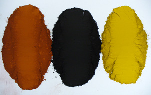
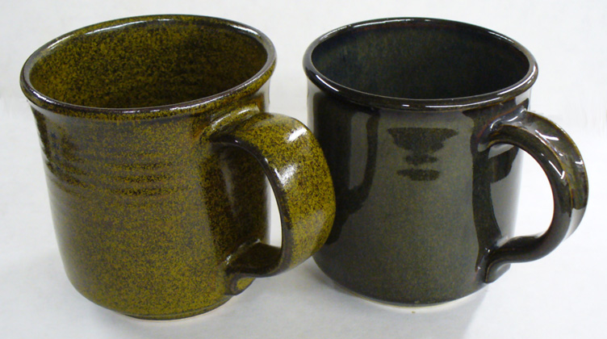
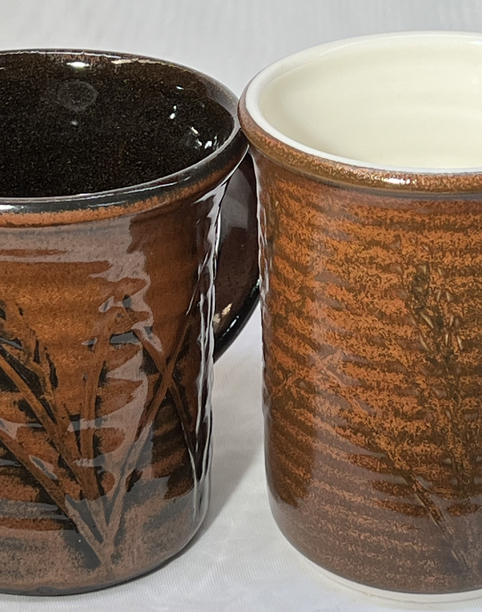
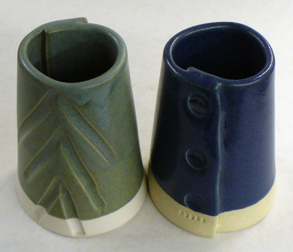
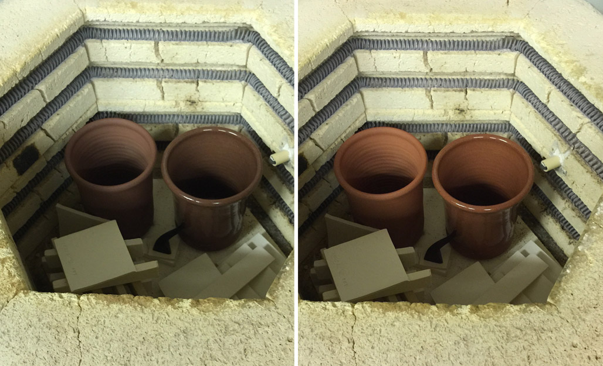
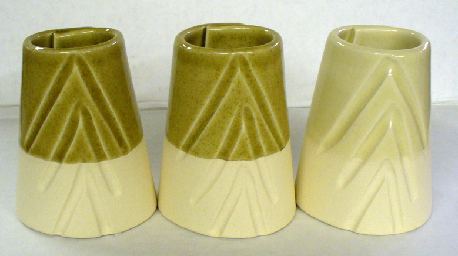
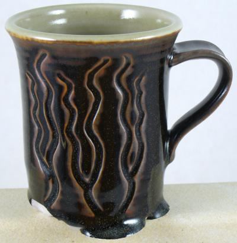
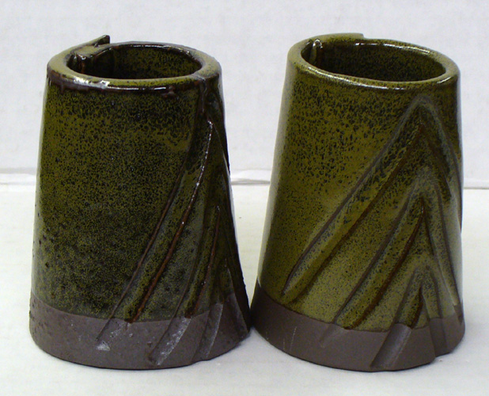

Fe2O3 (Iron Oxide, Ferric Oxide)
Data
| Co-efficient of Linear Expansion | 0.125 |
|---|---|
| Frit Softening Point | 1350C (From The Oxide Handbook) |
Notes
Ferrosic Oxide
(Sources: Iron Oxide, Stained Clays, many others)
-Iron compounds are the most common coloring agent in ceramics. On one hand, they are nuisance impurities where they stain an otherwise white clay or glaze or where they muddy an otherwise bright color. At the same time, iron exhibits so many personalities with different kiln atmospheres, temperatures, and firing cycles and with different glaze chemistries that it is among the most exciting of all materials.
-Chemically, iron is amphoteric like alumina. Fe2O3 generally behaves as a refractory antiflux material in a glaze melt, combining with alkalis. Oxidation iron-red glazes, for example, can have very low alumina contents yet do not run off ware because the iron acts like alumina to stabilize and stiffen the melt. However these glazes likely will have somewhat reduced durability.
-In glazes low in flux it can behave as an alkali, combining with silica.
-Fe2O3 is very affected by a reducing atmosphere where it can act as a flux in both bodies and glazes at high temperatures. Its fluxing action in reduction is quite remarkable and can be demonstrated using a line blend in a clear glaze. Higher amounts of iron exhibit dramatically increased fluidity (see FeO for more info).
-Fe2O3 is the most natural state of iron oxide where it is combined with the maximum amount of oxygen. In oxidation firing it remains in this form to typically produce amber to yellow up to 4% in glazes (especially with lead and calcia), tans around 6% and browns in greater amounts. In the 20% range, matteness is typical. However, once it reduces to FeO and immediately begins fluxing and forming a glass, it is difficult to reoxidize. Since the breakdown of carbon or sulfur compounds in body and glaze so easily reduces iron, a slow and very thoroughly oxidizing atmosphere is critical through the 700-900C range to assure that all the iron remains in its antiflux oxidized form.
-Most glazes will dissolve more iron in the melt than they can incorporate in the cooled glass. Thus extra iron precipitates out during cooling to form crystals. This behavior is true both in oxidation and reduction. For example, a typical mid-temperature fluid oxidation glaze of 8-10% iron will freeze black with fine yellow crystals. Lower temperature glaze with their high flux content can dissolve more iron (i.e. aventurine).
-Zinc can produce unpleasant colors with iron.
-Titanium and rutile modify iron and can give some striking variegated effects. For example, a popular middle temperature pottery glaze employs 4% tin, iron, and rutile in a clear base to give a highly variegated gloss brown. Another popular cone 6 glaze uses 85% Albany slip, 11% lithium, and 4% tin to produce an attractive gloss brown with striations and flow lines similar to classic lead glaze effects.
-While many iron-stained clays are reddish in color, high iron clays can also be blackish, grey, brown and deep brown, pinkish, greenish and yellowish or maroon. Some can be quite light in color yet fire to a brown or red color. 6-7% iron is considered a high-iron clay, but some stained clay-like materials can have 20% or more iron. A typical ivory colored oxidation firing body has 1-2% iron oxide.
-Low temperature earthenwares can exhibit a wide range of iron red colors, depending on the firing temperature. Typically, low fired materials burn to a light orange. As temperature is increased this darkens to light red, then dark red, and finally to brown. The transition from red to brown is often very sudden, occurring across a narrow temperature range. Thus the working temperature should be sufficiently above or below this range to avoid radical color changes associated with kiln variations.
-Fe3O4 is an intermediate form of iron which is brown in color and exhibits intermediate properties. Fe3O4 can either be a mix of FeO and Fe2O3 resulting from an incomplete conversion from one type to the other, or it can be a completely different mineral form of iron known as magnetic iron oxide from the ore magnetite. The latter is a hard crystalline material of use in producing specking in bodies and glazes.
-Generally additions of iron oxide to a glaze will reduce crazing (if supplied in adequate amounts; beyond 1 or 2 percent).
Iron oxide powder is available in many colors. Here are three.

This picture has its own page with more detail, click here to see it.
How can there be so many colors? Because iron and oxygen can combine in many ways. In ceramics we know Fe2O3 as red iron and Fe3O4 as black iron (the latter being the more concentrated form). But would you believe there are 6 others (one is Fe13O19!). And four phases of Fe2O3. Plus more iron hydroxides (yellow iron is Fe(OH)3).
The same glaze fires very differently depending on kiln cooling rate

This picture has its own page with more detail, click here to see it.
Both mugs use the same cone 6 oxidation high-iron (9%), high-boron, fluid melt glaze. Iron silicate crystals have completely invaded the surface of the one on the left, turning the gloss surface into a yellowy matte. Why? Multiple factors. This glaze does not contain enough iron to guarantee crystallization on cooling. When cooled quickly it fires the ultragloss near-black on the right. As cooling is slowed at some point the iron will begin to precipitate as small scattered golden crystals (sometimes called Teadust or Sparkles). As cooling slows further the number and size of these increases. Their maximum saturation is achieved on the discovery, usually by accident, of the likely narrow temperature range they form at (normally hundreds of degrees below the firing cone). Potters seek this type of glaze but industry avoids it because of difficulties with consistency.
Same iron red glaze on black stoneware and on porcelain

This picture has its own page with more detail, click here to see it.
The glaze is G3948A iron red fired at cone 6 using the C6DHSC schedule. The bodies are Plainsman Coffee Clay and Polar Ice (the insides are different glazes). They were in the same kiln. These mugs demonstrate how much reactive glazes can interact with the body beneath and how much that affects their fired properties, especially when they have high melt fluidity like this one. On the left the glaze is drawing color out of the body. The porcelain on the right has no color to give but it does have sodium - and it is supplying enough to act as a catalyst to the creation of the iron crystals.
The same glaze in reduction (left) and oxidation at cone 10

This picture has its own page with more detail, click here to see it.
It is not just iron oxide that changes character from oxidation to reduction. Of course, cobalt can fire to a bright blue in oxidation also, but this will only happen if its host glaze is glossy and transparent. In this case the shift to reduction has altered the character of the glaze enough so that its matte character subdues the blue.
The amazing color change from 500F to room temperature in terra cotta

This picture has its own page with more detail, click here to see it.
This is common with high iron clays, they lighten dramatically during the last few hundred degrees of cooling in the kiln.
How do black, red and yellow iron additions compare in a glaze?

This picture has its own page with more detail, click here to see it.
Example of 5% black iron oxide (left), red iron oxide (center) and yellow iron oxide (right) added to G1214W glaze, sieved to 100 mesh and fired to cone 8. The black is slightly darker, the yellow has no color? Do you know why?
FeO (iron oxide) is a very powerful flux in reduction

This picture has its own page with more detail, click here to see it.
This cone 10R glaze, a tenmoku with about 12% iron oxide, demonstrates how iron turns to a flux, converting from Fe2O3 to FeO, in reduction firing and produces a glaze melt that is much more fluid. In oxidation, iron is refractory and does not melt well (this glaze would be completely stable on the ware in an oxidation firing at the same temperature, and much lighter in color).
Iron oxide goes crazy in reduction

This picture has its own page with more detail, click here to see it.
Cone 6 iron bodies that fire non-vitreous and burn tan or brown in oxidation can easily go dark or vitreous chocolate brown (or even melting and bloated in reduction). On the right is Plainsman M350, a body that fires light tan in oxidation, notice how it burns deep brown in reduction at the same temperature. This occurs because the iron converts to a flux and the glass development that occurs brings out the dark color. On the left is Plainsman M2, a raw high iron clay that is quite vitreous in oxidation, but in reduction it is bloating badly. When reduction bodies are this vitreous there is a much great danger of black coring.
Ceramic Oxide Periodic Table

Pretty well all common traditional ceramic base glazes are made from less than a dozen elements (plus oxygen). Go to the full picture of this table and click or tap each of the oxides to learn more (on its page at digitalfire.com). When materials melt, they decompose, sourcing these elements in oxide form. The kiln builds the glaze from them, it does not care what material sources what oxide (assuming, of course, that all materials do melt or dissolve completely into the melt to release those oxides). Each of these oxides contributes specific properties to the glass. So, you can look at a formula and make a good prediction of the properties of the fired glaze. And know what specific oxide to increase or decrease to move a property in a given direction (e.g. melting behavior, hardness, durability, thermal expansion, color, gloss, crystallization). And know about how they interact (affecting each other). This is powerful. A lot of ceramic materials are available, hundreds - that is complicated when individual materials source multiple oxides. Viewing a glaze as a simple unity formula of ceramic oxides is just simpler.
Links
| Materials |
Iron Oxide Red
Red iron oxide is the most common colorant used in ceramic bodies and glazes. As a powder, it is available in red, yellow, black and other colors. |
| Oxides | FeO - Ferrous Oxide |
Mechanisms
| Body Color | In low fire the presence of iron produces red terra cotta colors that progress to brown with maturity. High temperature red bodies depend on stopping firing well short of vitrification. In higher temperature vitreous bodies fired in reduction iron is converted to actively melting black iron oxide that teams up with feldspathic melts that can dissolve benificial mullite and quartz crystals. As iron - rich liquids cool into glass, the glass has a brittle character. |
|---|---|
| Glaze Color | Low fire lead, potash and soda glazes encourage reddish colors with iron. Should be barium free. |
| Glaze Color | In reduction glazes Fe2O3 tends to fire bluish or turquoise to apple green with high soda (boric oxide may enhance). 0.5% iron with K2O may give delicate blue to blue green. |
| Glaze Color | Iron produces a wide range of browns in bodies and glazes at all temperatures. |
| Glaze Color | Fe2O3 tends to fire yellowish with calcia and in alkaline glazes straw yellow to yellow brown. In reduction, 3-4% iron with 0.4 BaO, 0.15 KNaO, 0.25 CaO, 0.2 MgO, 0.3 Al2O3, 1.7 SiO2 and 15-20% zircon opacifier will produce a yellow opaque. |
 PayPal | No tracking, No ads, No paywall, No transient content! Just organized, concise information constantly updated and improved. Was this helpful? Consider supporting me. |
| By Tony Hansen Follow me on        |  |
Got a Question?
Buy me a coffee and we can talk 

https://digitalfire.com, All Rights Reserved
Privacy Policy